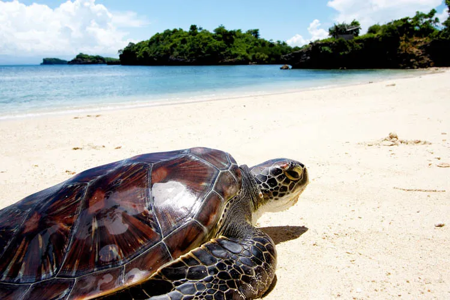
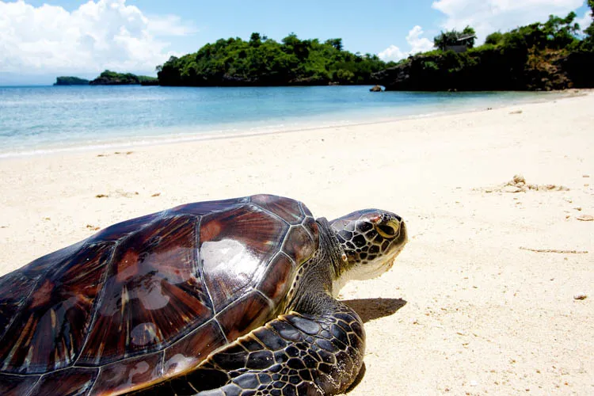

Guimaras Island: An Island-Hopping Adventure
 

Guimaras Island presents a myriad of island-hopping possibilities, where every destination unravels a new chapter of beauty and excitement. From pristine beaches to vibrant marine life, each stop offers a unique and awe-inspiring experience. Whether you seek serenity, underwater exploration, or simply a day of sun-soaked bliss, Guimaras Island promises an island-hopping adventure like no other. Let the azure waters and picturesque islands of Guimaras be your gateway to an unforgettable exploration of nature's wonders.
One of Guimaras' most notable treasures lies in its shores. The island is embraced by pristine white sand beaches that stretch as far as the eye can see. Crystal-clear turquoise waters gently lap against the shore, inviting travelers to take a dip in their inviting embrace. Alubihod Beach, with its powdery sand and calm waters, is a popular spot for sun-seekers and families. Raymen Beach, another beachfront paradise, offers a tranquil escape from the hustle and bustle of city life.


As the island-hopping adventure continues, a visit to the Turtle Island Marine Reserve is a must. This protected area serves as a sanctuary for various marine turtle species, providing a unique opportunity to witness these magnificent creatures up close. Snorkel alongside gentle sea turtles as they gracefully glide through the water, an awe-inspiring encounter that leaves a lasting impression.


No island-hopping adventure in Guimaras would be complete without a visit to Guisi Beach and the historic Guisi Lighthouse. Situated on the southwestern coast of the island, Guisi Beach boasts pristine sands and breathtaking sunset views. Take a leisurely stroll along the shore, swim in the turquoise waters, or simply relax and savor the tranquility of the surroundings. Atop a nearby hill stands the iconic Guisi Lighthouse, a historic landmark that offers panoramic vistas of the coastline and the neighboring islands.